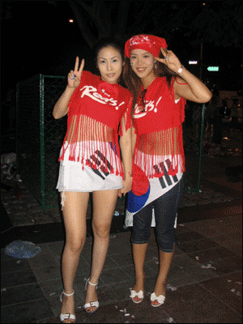

2000년대 대국민을 하나로 뭉친 몇 가지 사건 중 가장 기억에 남는 것은 바로 2002년 월드컵이 아닐까 싶다. 2002년 대한민국을 세계에 알린 역사적인 사건이기도 하며, 대한민국의 패션 역사에도 엄청난 사건이 바로 2002년 월드컵이라고 생각한다. 그 시절 "reds"가 적힌 붉은 티셔츠는 어딜 가든 볼 수 있었고, 남녀노소 모두가 입었던 바로 전 국민 티셔츠라고 할 수 있다. 아마 시장에서 말 그대로 불티나게 팔렸던 그 옷이다. 어쩌면 2000년대 패션은 이 붉은색과 떼려야 뗄 수 없었던 사이가 된 계기가 된 사건일지도 모른다. 모든 국민이 붉은색을 입었다. 사실 원색의 채도가 높은 붉은색은 자극이 강렬해 심리적으로 정열, 흥분, 적극성, 광기를 표현하는데 많이 사용해 쉽게 코디하기 어려운 색임에도 불구하고, 그 시절 붉은색, 노란색 등의 원색이 인기가 있었던 건 지금 생각해도 놀랄 수밖에 없다. 개성을 중시하던 90년대 2000년대 사이 붉은 악마는 소속감이라는 감투 속에 울부짖는 괴물이었을지도 모른다.
